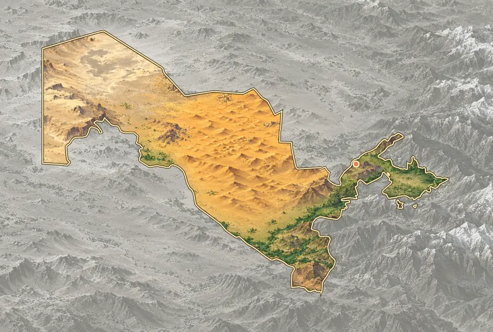
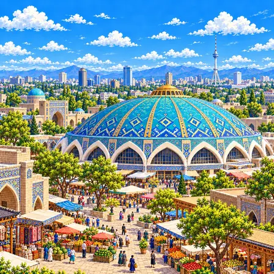
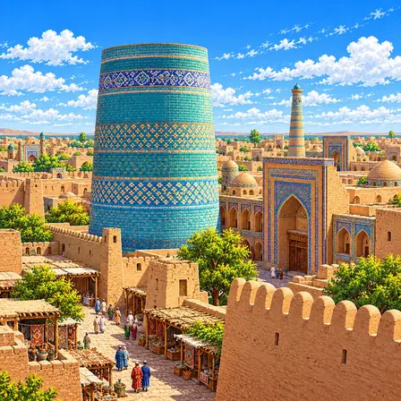
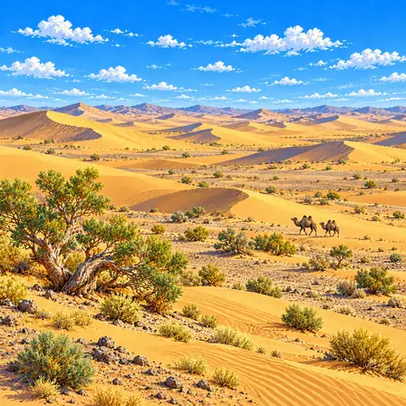
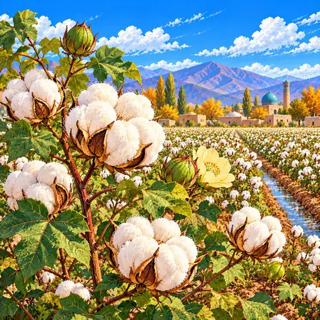
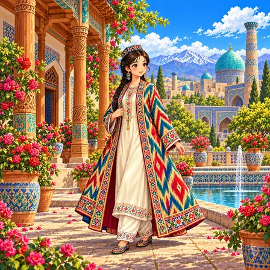
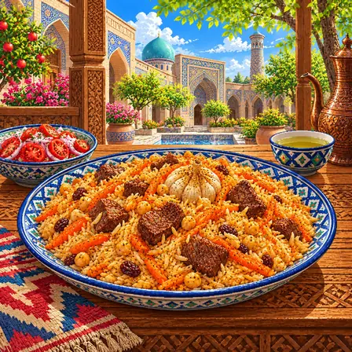
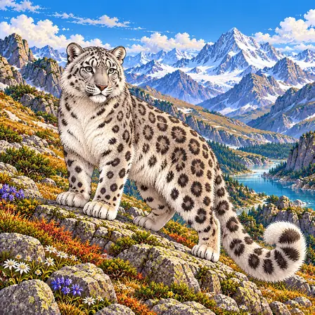
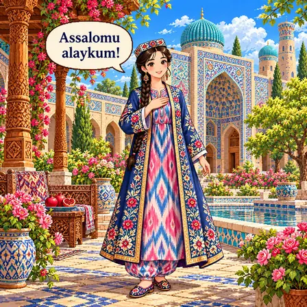

서쪽의 사막, 동쪽의 산지
서부에는 높고 평평한 우스튜르트고원이, 가운데에는 키질쿰 사막이 넓게 펼쳐져요. 동부와 남동부에는 톈산과 기사르·알라이 산지가 솟아 있어요.

우즈베키스탄은 바다가 없는 나라예요. 서쪽에는 넓은 사막이 있고, 동쪽에는 높은 산이 있어요. 강물이 흐르는 곳에 마을과 밭이 모여 있어요.
우즈베키스탄은 바다와 닿지 않은 내륙국이에요. 서쪽의 우스튜르트고원과 가운데의 키질쿰 사막, 동쪽의 톈산 계열 산지와 페르가나 분지가 있고, 아무다리야강과 시르다리야강이 생활을 떠받쳐요.
서부에는 높고 평평한 우스튜르트고원이, 가운데에는 키질쿰 사막이 넓게 펼쳐져요. 동부와 남동부에는 톈산과 기사르·알라이 산지가 솟아 있어요.
페르가나 분지는 동쪽 산지 사이의 낮은 땅이에요. 산에서 내려온 강물을 끌어 쓰는 물길 주변에 밭과 도시가 발달했어요. 수도 타슈켄트는 산지 서쪽의 평지에 있어요.
아무다리야강과 시르다리야강은 먼 산의 눈과 빙하가 녹은 물을 싣고 흘러와요. 키질쿰 사막은 이 두 강 사이에 펼쳐져 있고, 강가를 따라 초록색 오아시스 띠가 이어져요.
출처: NASA Earth Observatory, World of Change: Shrinking Aral Sea · FAO, Irrigation in Central Asia
북서쪽의 아랄해는 한때 세계에서 네 번째로 큰 호수였어요. 1960년대부터 강물을 농사에 많이 끌어 쓰면서 물이 크게 줄었고, 드러난 호수 바닥은 사막이 되었어요.
출처: NASA Earth Observatory, World of Change: Shrinking Aral Sea
서부의 우스튜르트와 남서부의 아무다리야 분지에는 오래전 바다와 호수 밑에 쌓인 퇴적암 지층이 두껍게 있어요. 지금의 사막 아래에 그 기록이 남아 있어요.
산에서 내려오는 물은 골짜기를 깎고 낮은 곳에 흙을 쌓아요. 건조한 평지에서는 바람이 모래를 날려 모래언덕을 옮겨요.
우즈베키스탄에서 잘 알려진 도시, 역사유산, 자연, 식물, 문화, 음식, 동물, 인사말, 국기를 한 장씩 그렸어요.

타슈켄트는 우즈베키스탄의 수도예요. 커다란 파란 돔 지붕 아래 초르수 시장이 있어요. 시장에서는 과일과 빵, 향신료를 팔아요.
타슈켄트는 우즈베키스탄의 수도로, 오래된 시장과 넓은 거리, 공원이 함께 있는 도시예요. 초르수 시장의 큰 푸른 돔 아래에서는 과일과 향신료, 빵 등을 거래해요. 오랜 교역의 역사를 지녔으며, 1966년 큰 지진 뒤에는 도시 곳곳을 다시 지었어요. 멀리 보이는 타슈켄트 텔레비전 탑은 중앙아시아에서 가장 높은 탑이에요.

이찬 칼라는 흙빛 성벽으로 둘러싸인 옛 도시예요. 옛날 상인들이 쉬어 가던 중요한 곳이었어요. 짧고 통통한 파란 탑 '칼타 미노르'가 눈에 띄어요.
이찬 칼라는 히바의 성벽 안쪽에 있는 옛 도시예요. 중앙아시아 교역로의 중요한 거점이었으며, 모스크와 마드라사, 궁전, 미나렛이 남아 있어요. 짧고 넓은 푸른 원통형 탑은 공사가 완성되지 않은 칼타 미노르예요. 뒤쪽에는 가늘고 높은 이슬람 호자 미나렛이 서 있어요. 1990년에 유네스코 세계유산으로 등재됐어요.

키질쿰은 '붉은 모래'라는 뜻을 가진 넓은 사막이에요. 모래 언덕과 자갈 땅에 작은 나무가 드문드문 자라요. 강 가까이에는 마을과 밭이 있어요.
키질쿰은 아무다리야강과 시르다리야강 사이에 펼쳐진 넓은 사막으로, 우즈베키스탄을 비롯한 이웃 나라까지 이어져요. 이름은 ‘붉은 모래’라는 뜻이지만, 모래 언덕과 자갈 평지, 드문 관목 등 다양한 건조 지형이 있어요. 강 주변의 물을 이용할 수 있는 곳에는 농경지와 오아시스 도시가 발달했어요.

목화는 하얀 솜이 열리는 식물이에요. 하얀 솜은 꽃잎이 아니라 씨앗을 감싼 털이에요. 이 솜으로 실을 뽑아 옷감을 만들어요.
목화의 하얀 부분은 꽃잎이 아니라 씨앗을 감싸는 섬유예요. 꽃이 진 뒤 둥근 열매가 자라고, 익은 열매가 갈라지면 솜털 같은 섬유가 드러나요. 목화는 우즈베키스탄의 농업과 직물 문화에 오랫동안 중요한 작물이었어요. 건조한 지역의 재배에는 물이 필요하므로 관개와 물 관리도 함께 생각해야 해요.

차판은 옷 위에 걸쳐 입는 길고 넉넉한 겉옷이에요. 도피는 수를 놓은 네모난 모자예요. 명절이나 결혼식 같은 날 함께 입어요.
차판은 다른 옷 위에 걸치는 길고 넉넉한 전통 겉옷이에요. 천과 안감, 누빔, 자수 장식은 계절과 쓰임에 따라 달라요. 실을 먼저 물들여 무늬를 만드는 이카트 옷감으로 짓기도 해요. 도피는 지역에 따라 형태와 자수 무늬가 다른 전통 모자예요. 차판과 도피는 명절이나 결혼식 같은 자리에서도 볼 수 있어요.

플로브는 고기와 당근, 쌀을 큰 솥에 함께 익힌 요리예요. 결혼식이나 잔치에서 여럿이 나눠 먹어요. 우즈베키스탄 사람들이 아주 좋아하는 음식이에요.
플로브는 팔로브 또는 팔로프라고도 부르는 우즈베키스탄의 쌀 요리예요. 카잔이라는 솥에서 고기와 당근, 양파 등을 익히고 쌀을 넣어 맛을 어우러지게 해요. 지역과 조리법에 따라 마늘이나 병아리콩, 건포도 등을 더하기도 해요. 가족 식사뿐 아니라 결혼식과 공동체의 모임에서 음식을 나누는 문화와도 연결돼 있어요. 이 팔로브 문화와 전통은 2016년 유네스코 인류무형문화유산 대표목록에 등재됐어요.

눈표범은 높은 산에 사는 고양이과 동물이에요. 회색 털의 무늬 덕분에 바위 사이에서 잘 숨어요. 길고 굵은 꼬리로 가파른 바위에서 균형을 잡아요.
눈표범은 중앙아시아와 남아시아의 높은 산지에 사는 고양이과 동물로, 우즈베키스탄 동부의 산지에도 서식해요. 회색 털의 짙은 고리무늬는 바위와 그림자 속에 몸을 숨기는 데 도움이 돼요. 긴 꼬리는 가파른 바위에서 균형을 잡는 데 쓰이고, 두꺼운 털과 넓은 발은 추운 환경에 적응한 특징이에요. 서식지 변화와 먹이 감소, 밀렵 등의 위협을 받아 여러 나라가 함께 보호하고 있어요.

앗살로무 알라이쿰은 '평화가 함께하길'이라는 뜻의 인사예요. 우즈베키스탄 사람들이 만날 때 써요. 인사를 받으면 '바 알라이쿰 앗살롬'이라고 대답해요.
Assalomu alaykum은 ‘앗살로무 알라이쿰’이라고 읽으며, ‘당신에게 평화가 깃들기를’이라는 뜻의 인사말이에요. 아랍어에서 온 표현이 우즈베크어에서도 사용돼요. 답할 때는 ‘Va alaykum assalom’이라고 말할 수 있어요. 우즈베크어는 튀르크어족에 속하는 언어예요. 우즈베크어의 공식 문자는 라틴 문자이고, 키릴 문자도 아직 함께 쓰여요.

우즈베키스탄 국기는 파랑, 하양, 초록 세 줄로 되어 있어요. 왼쪽 위에는 하얀 초승달과 별 12개가 있어요. 별 12개는 1년 열두 달을 뜻한다고 해요.
우즈베키스탄 국기는 파랑·하양·초록 세 개의 가로줄과 그 사이의 가는 빨간 선 두 줄로 이루어져 있어요. 왼쪽 위에는 흰 초승달과 별 12개가 그려져 있어요. 파랑은 하늘과 물, 하양은 평화, 초록은 자연을 나타낸다고 공식적으로 설명돼요. 별 12개는 1년 열두 달을 뜻한다고 해요. 1991년 독립하면서 새 국기로 제정했어요.